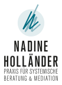

NADINE HOLLÄNDERKontakt aufnehmen ↗
NADINE HOLLÄNDERKontakt aufnehmen ↗Ein neuer Auftritt.
Drei Möglichkeiten.
Das vorhandene Logo, die persönlichen Worte und ein klarer Anfang. Drei Entwürfe für die neue Webseite – vom reduzierten Auftakt bis zur ersten persönlichen Vorstellung.
Perspektiven.
Gemeinsam
weitergehen.

01 / PERSÖNLICH & ZUGEWANDT
Klarheit & Verbindung
Ein großer erster Eindruck, ein persönliches Porträt und ein kurzer Einstieg in die eigene Arbeit.
Entwurf öffnen ↗
02 / RUHIG & REDUZIERT
Der erste Anfang
Das Logo im Mittelpunkt. Eine kompakte „Bald mehr“-Seite mit direktem Kontakt.
Entwurf öffnen ↗Perspektiven
eröffnen.
03 / KLAR & AUSDRUCKSSTARK
Raum für Perspektiven
Ein großzügiger Auftritt mit dem vorhandenen Kurzprofil. Ein erster Schritt zur vollständigen Webseite.
Entwurf öffnen ↗Alle Varianten greifen das vorhandene Logo und seine Farben auf. Texte basieren auf dem gelieferten Kurzprofil; Überschriften sind redaktionelle Vorschläge. Die Seite wird später unter nadinehollaender.de veröffentlicht. Diese Übersicht dient der Auswahl einer Gestaltungsrichtung.